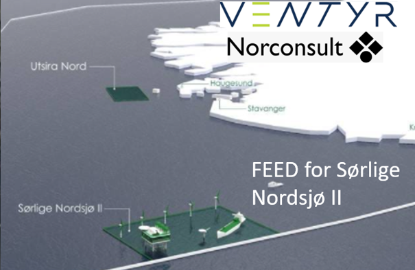

Om prosjektet
Sørlige Nordsjø II – Ventyr er et havvindprosjekt i tidligfase. RUDCON AS har gjennomført vurderinger av kabel-landfall, landanlegg og nettilknytningsløsninger som kritiske elementer for prosjektets gjennomførbarhet.
Fokusområder
- Kabel-landfall løsninger
- Landanleggsdesign
- Nettilknytningsløsninger
- Tekniske utfordringer og muligheter
RUDCON sin rolle
- Kabelteknisk ekspertise
- Tidligfasevurderinger
- Deltakelse i integrert prosjektteam
- Teknisk rådgivning
Bilde
